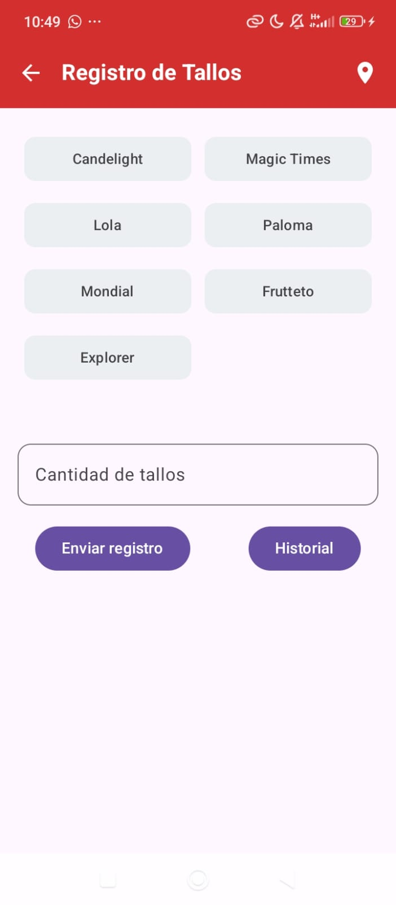
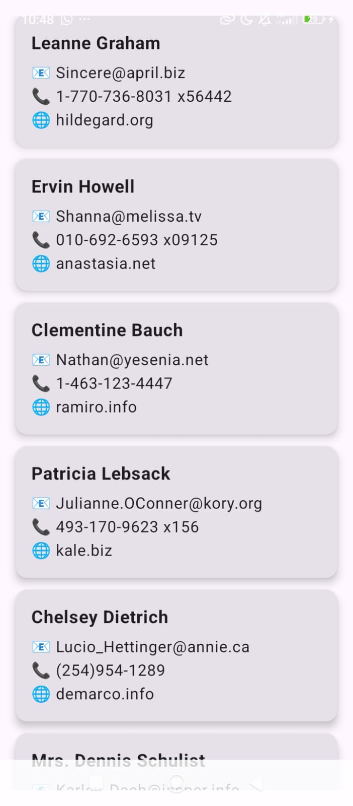
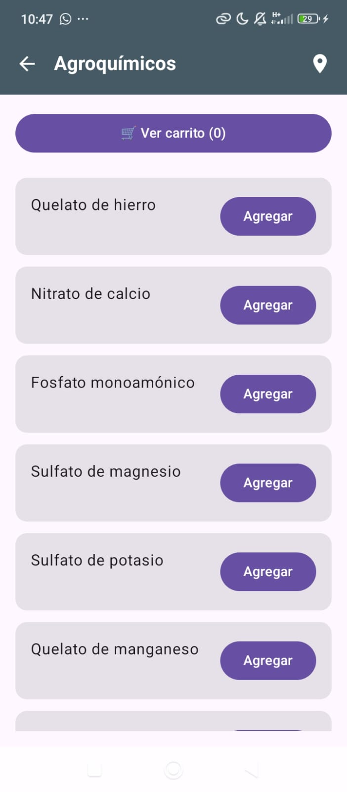
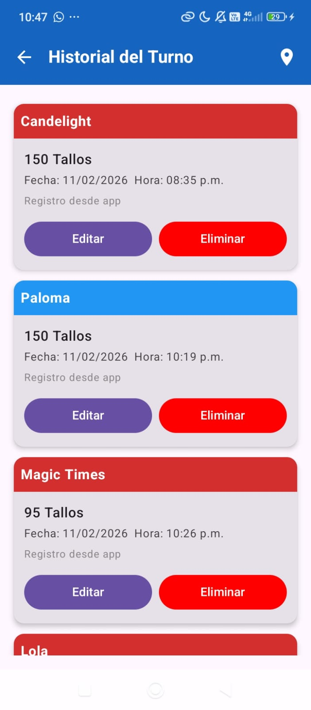
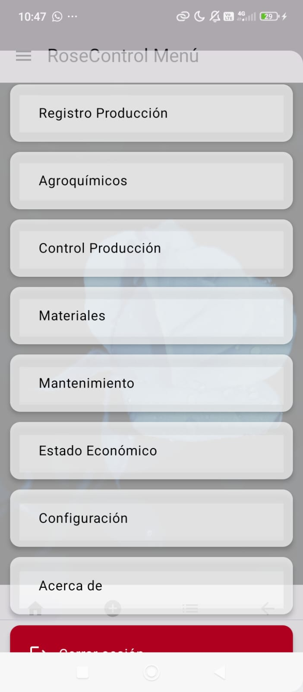
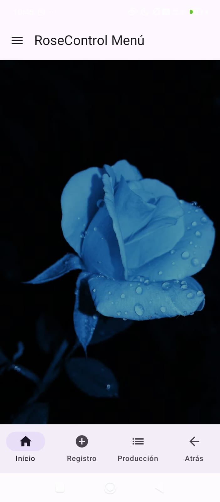
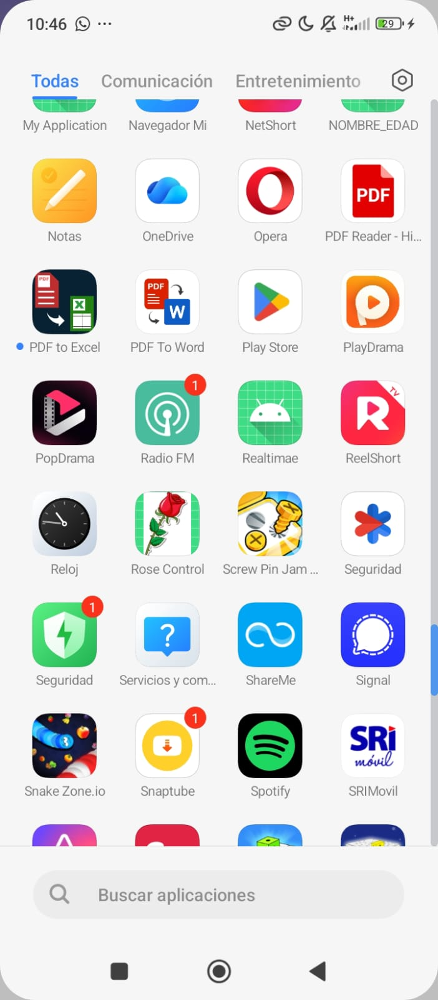

Aplicación desarrollada en Android con tecnologías modernas
Aplicación móvil desarrollada en Kotlin y Jetpack Compose que permite gestionar producción agrícola, administrar productos agroquímicos, realizar operaciones CRUD y consumir datos desde una API REST externa.
Lenguaje moderno que mejora la productividad y seguridad en Android.
Framework declarativo para construir interfaces dinámicas.
Base de datos NoSQL en la nube para almacenar registros.
Librería para consumo eficiente de APIs REST.
Entorno de desarrollo utilizado para crear la aplicación.
Se implementaron funciones para guardar, editar y eliminar registros, permitiendo modularidad y reutilización del código.
Se utilizaron clases como RegistroProduccion y Producto, aplicando encapsulación y organización estructurada del código.






